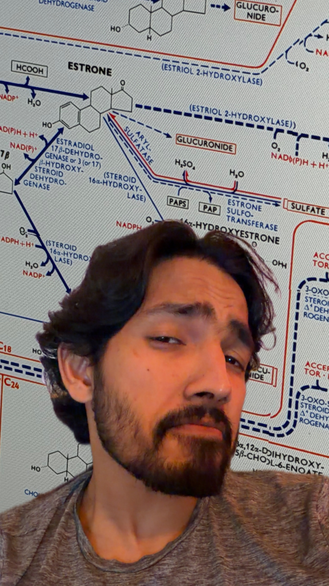

Hi, I am Abel Tomy

I’m from Kerala, India.
I currently live in Luleå, Sweden. Previous to that, I lived in India, UK, Slovenia.
Mailto : hi[at]abeltomy[dot]com
Site inspired by KISS principle by Kelly Johnson, Lockheed Martin.
“A human being should be able to
change a diaper,
plan an invasion,
butcher a hog,
conn a ship,
design a building,
write a sonnet,
balance accounts,
build a wall,
set a bone,
comfort the dying,
take orders,
give orders,
cooperate,
act alone,